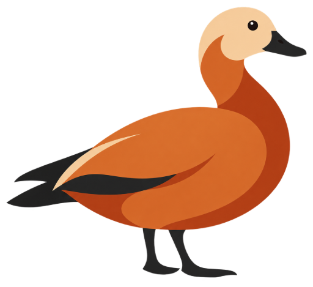

Domain tooling for Rust
A Rust framework for
your domain model.
A Rust platform for domain models, event sourcing, and messaging. Define the rules in Rust. Inspect what happens in Tracer Studio.
Open source / Rust / EUPL-1.2
#[derive(Command, Clone, Debug, Eq, PartialEq)]
#[domain(
id = "rent-bicycle",
label = "Rent bicycle",
context = BikeRental,
schema_version = 2
)]
pub struct RentBicycle {
pub fleet_id: FleetId,
pub bicycle_id: BicycleId,
}Keep the rules close.
Define aggregates, commands, events, and policies in Rust. Keep domain logic independent of storage and brokers.
Make decisions explicit.
Commands are accepted or rejected. Accepted commands may emit events; acceptance does not require an event.
See what follows.
Explore the compiled model in Tracer. Simulate read-only, run isolated tests, or dispatch with separate authorization.
Inspect the example model
From the repository root, print the compiled bike-rental model. This command does not need a running NATS server.
cargo run --locked -p bike-rental --bin bike-rental-modelWhat the model contains
- Aggregates
- State and ownership boundaries
- Commands
- Typed requests for domain behavior
- Domain events
- Facts recorded in aggregate history
- Queries
- Read-only application requests
The other half of the workbench
Your model, under inspection.
Command / schema v2
Rent bicycle.
Command input
JSONdemo-fleetIllustrative result from the repository fixture. No runtime request.
Expected message flow
03 messagesExpected messages from rent-available-bicycle.json.
Message detail
schema v1Domain event
bicycle-rented
Raised when the rental action accepts an available bicycle.
{
"fleet_id": "city-fleet",
"bicycle_id": "bike-42"
}